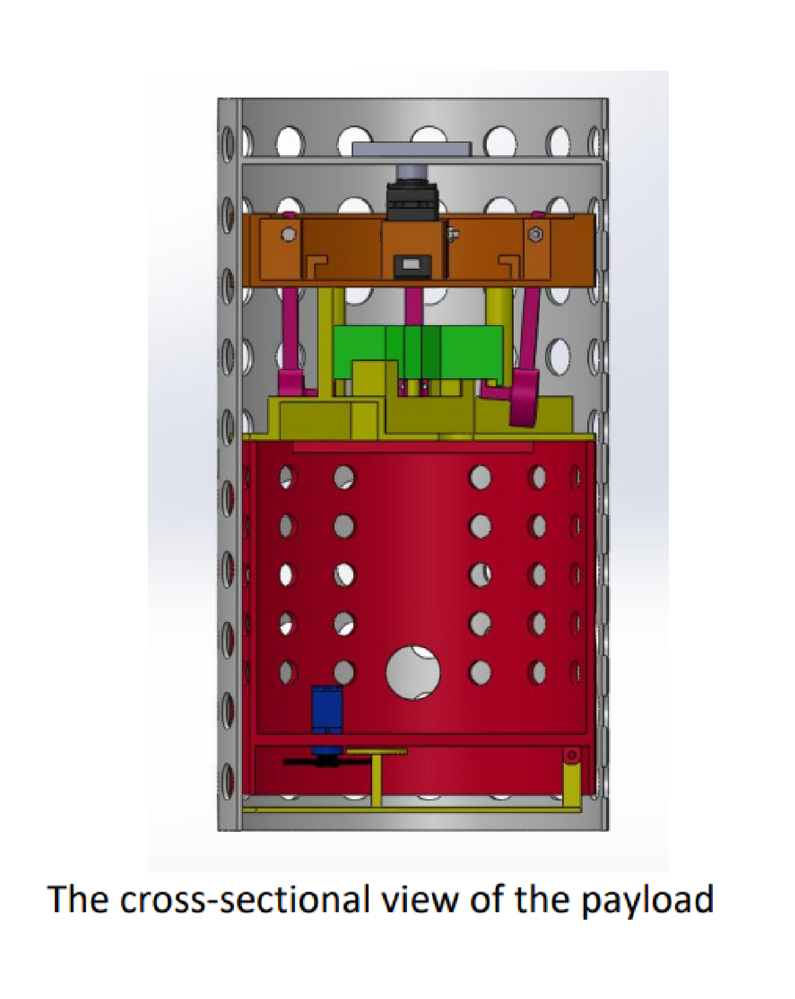
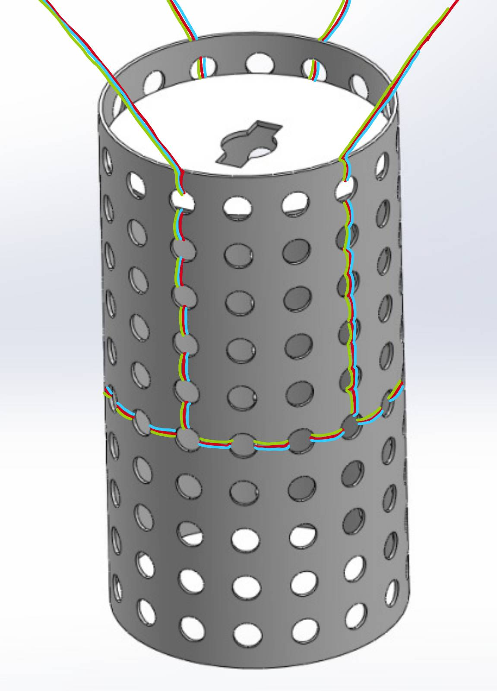
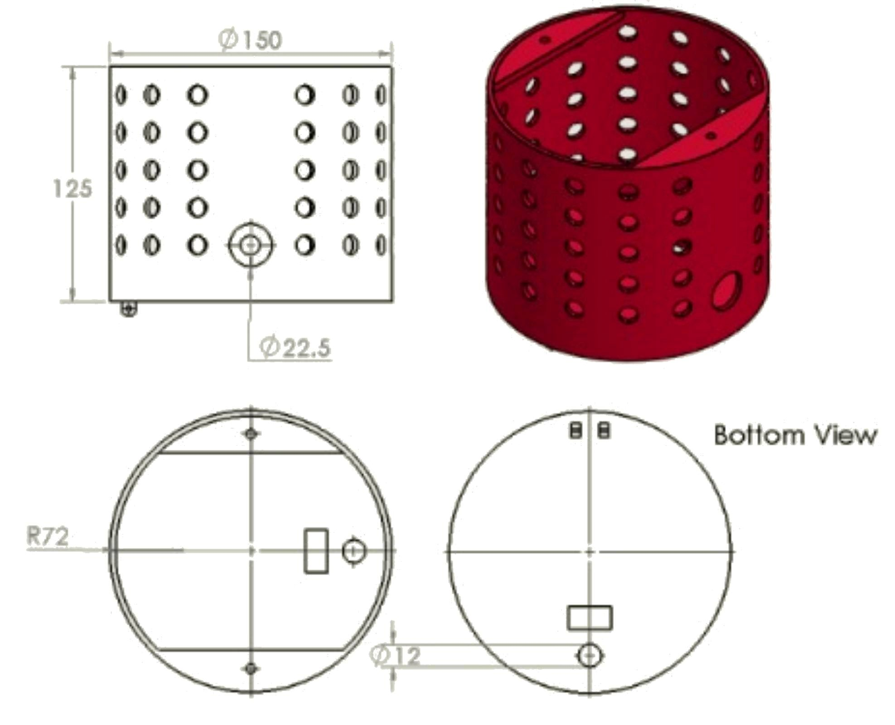
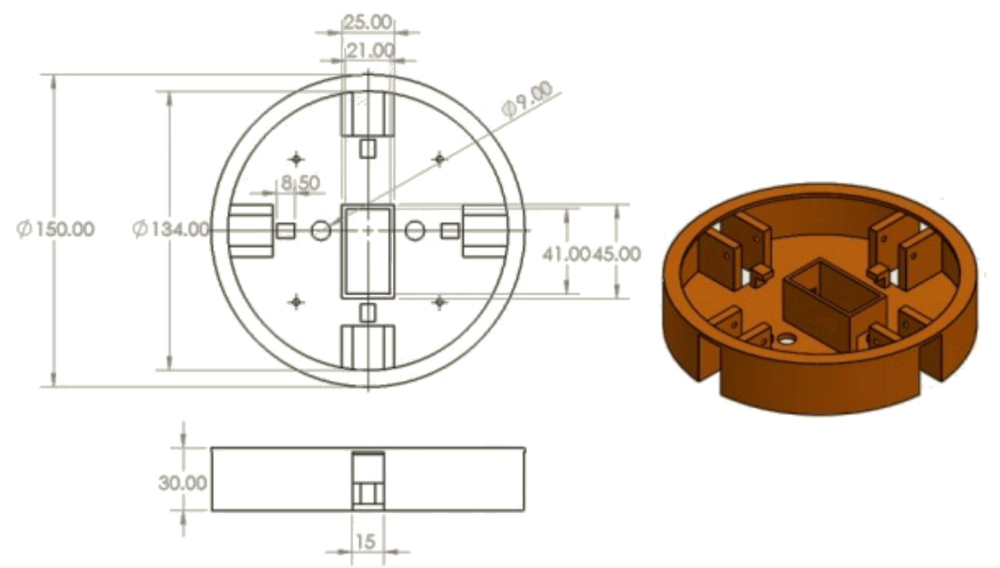
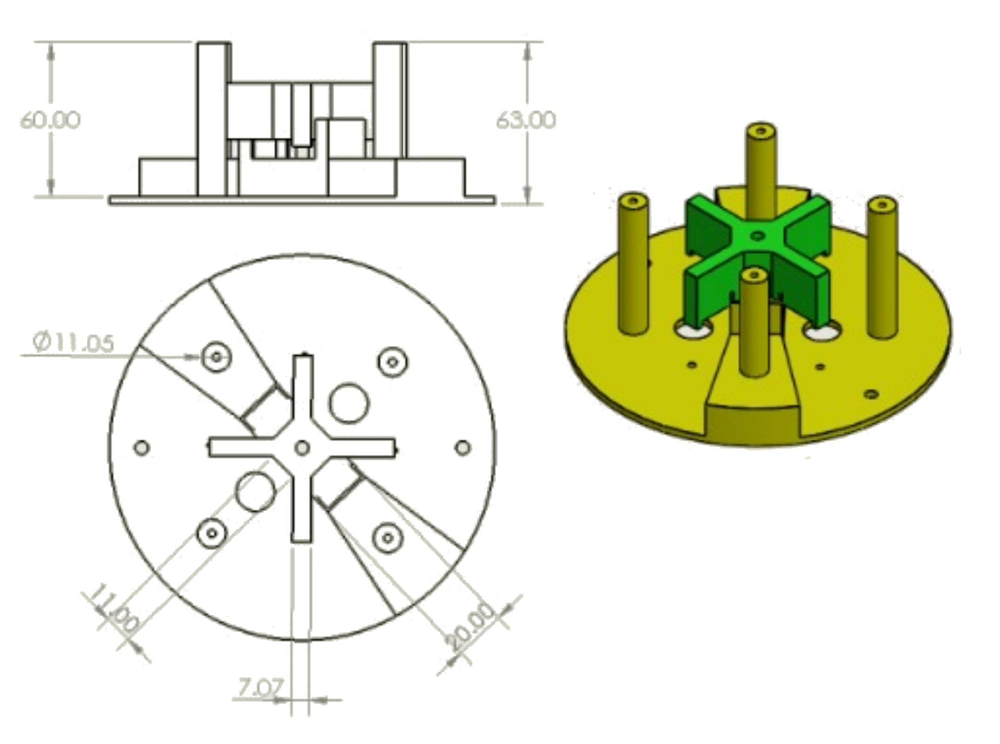
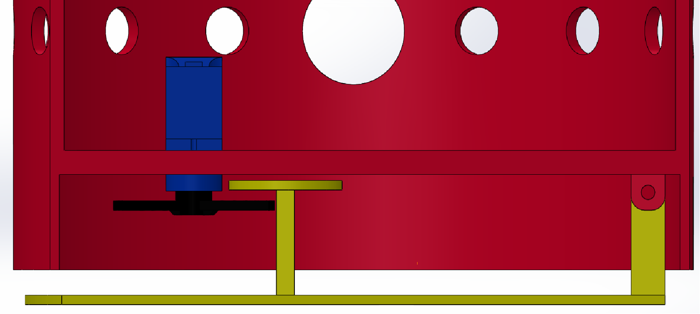
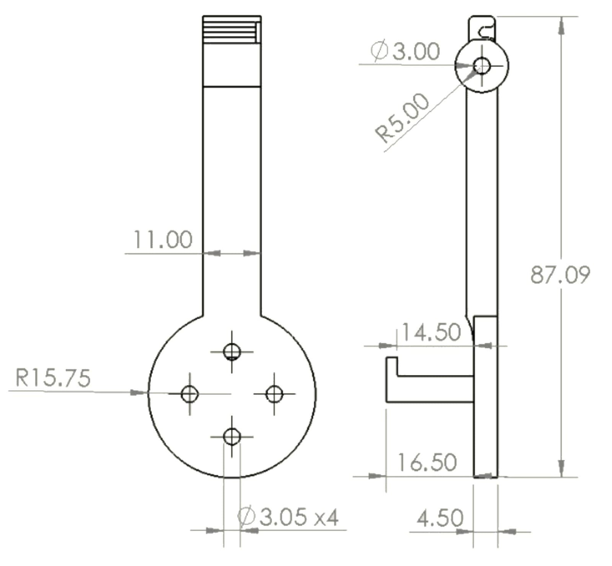
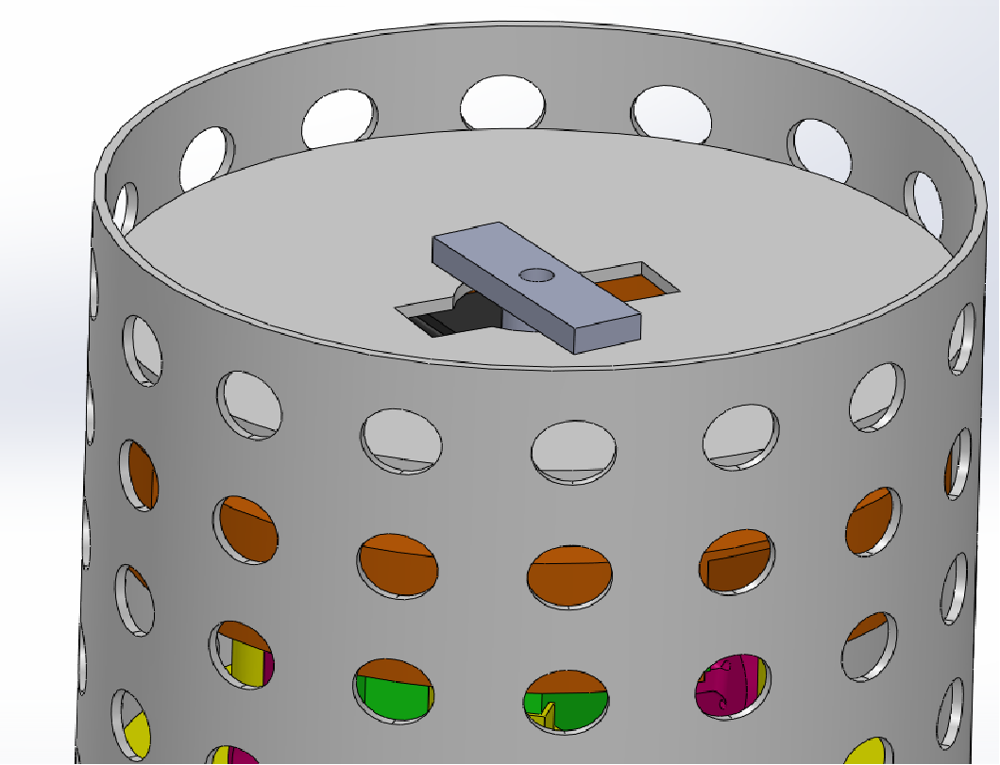
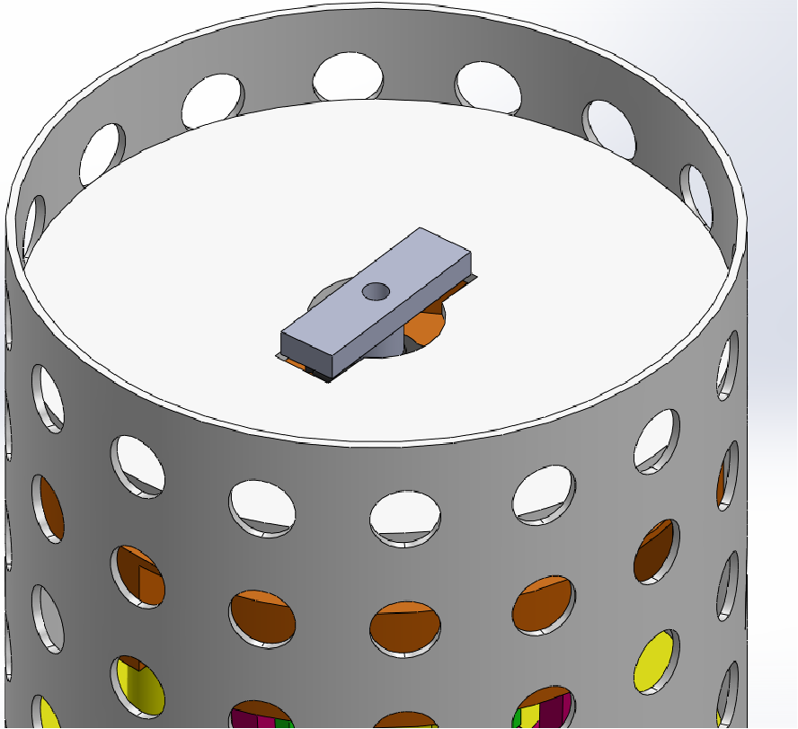

Mechanical Design Engineer | CAD Design | Structural Integration
A detailed overview of the Preliminary design process, engineering decisions, and subsystem development for Cansat 2026 competition project.

CanSat 2026
Mechanical Design Engineer
SolidWorks
CanSat is an international engineering competition in which teams design, build, and test a satellite that fits within the dimensions of a standard soda can. After being launched to altitude, the CanSat performs a mission while safely descending under a parachute.
For the 2026 competition, our team developed a complete CanSat system capable of meeting the mission requirements while maintaining structural reliability, efficient use of internal space, and controlled recovery.
As the Mechanical Design Engineer, I was responsible for designing the mechanical structure, optimizing the internal layout, performing CAD modeling, and supporting engineering calculations throughout the Preliminary Design Review phase.
The CanSat 2026 mission consists of two main subsystems: a Container and a Science Payload. The container protects the payload during launch and releases it at the designated altitude, while the Science Payload performs the primary mission during descent.
Our project introduces SIGMA, an active landing control system designed to improve descent stability and landing precision. Unlike conventional passive recovery systems, SIGMA actively controls the payload's motion by detecting instabilities and generating corrective mechanical responses throughout the descent.
The mechanical design of the CanSat was developed to satisfy the competition requirements while ensuring structural integrity, efficient use of internal space, ease of manufacturing, and reliable deployment of all mechanical subsystems.
The complete system consists of a Container and a Science Payload. The Container protects the payload during launch and descent until separation. After release, the Science Payload deploys the active landing mechanism and performs the mission independently.

The Container protects the Science Payload from external impacts and environmental conditions while providing aerodynamic stability. It includes a rectangular slot with a circular cutout for the payload separation mechanism, and circular holes for parachute attachment and minor mass balancing. Since it contains no sensitive electronics, minor deformations do not affect mission performance.

The payload consists of several independent sections, each serving a specific purpose. These sections are assembled using M3 steel bolts, with washers used where necessary to improve stability and reduce vibrations.

The motor section includes four mounting points for the motor supports, secured with M3 bolts and nuts. A central compartment houses the servo motor, which rotates a shaft to provide a reliable payload separation mechanism. The section is connected to the linear actuator section using M3 bolts. Two 9 mm diameter holes are provided for routing wires to the payload section.

The linear actuator section contains two holes for wire routing, a motor holder, and mounting points for two linear actuators. The motor holder secures the motor arms during descent. Upon receiving a deployment command, the actuators lift the holder, releasing the motor arms so they can unfold and allow the motors to operate at the required thrust.

The parachute section has a slightly smaller diameter than the payload to prevent interference during assembly. It is attached to the payload using an M3 bolt and nut and is held in place by a servo motor through its horn. Since the parachute section is lightweight, an SG90 servo motor is sufficient for deployment. The container parachute is attached through multiple circular holes around the upper body, ensuring even load distribution, balanced descent, and reduced rotational instability.

The motor stick serves as the mounting structure for the propulsion motors. A hook-shaped feature at the top of the component locks the motor arms in their folded position during descent. Once released by the deployment mechanism, the motor arms unfold, allowing the propulsion system to operate.
By setting the system to constant velocity position, we equate the weight of the system to its aerodynamic drag
\(W = F_D\)
\(mg = \frac{1}{2}\rho V^2 C_D A \)
where \(F_D\) is the drag force, \(\rho\) is air density, \(V\) is descent velocity, \(C_D\) is the drag coefficient, and \(A\) is the reference area.
Separating the area
\[ A=\frac{2mg}{\rho V_t^2 C_D} \]
For the container and payload system:
After calculations, the required parachute area was determined as:
\[ A=0.0854\,m^2 \]Using the circular area relationship, the corresponding parachute diameter is:
\[ D=0.33\,m \]For stable aerodynamic descent, the parachute suspension line length was selected as 1.5 times the parachute diameter. Therefore, the estimated rope length is:
\[ L=1.5D=1.5(0.33)=0.50\,m \]All potential structural hazards were evaluated, with the (motor mount) identified as the most critical component due to the mounting holes, which create stress concentrations. According to Solidworks estimations, the cross-sectional area for the motor sticks is estimated to be 655.19 mm^2 and a second moment of inertia is 36,502.91 mm^4.
At motors' peak thrust condition, the thrust generated is expected not to exceed 10 N. By applying the normal stress formula, we obtain
\[ A=655.19 \times 10^{-6} = 0.00065519\,m^2 \]The normal stress was calculated using:
\[ \sigma=\frac{F}{A} \]Therefore:
\[ \sigma=\frac{10}{0.00065519} \] \[ \sigma=15262.3\,Pa \]The calculated normal stress is approximately:
\[ \boxed{\sigma=15.26\,kPa} \]The estimated stress remains well within the allowable limits of the material. To increase structural reliability and reduce deformation under dynamic loading, the motor mount thickness was increased, providing an additional safety margin. However, manufacturing factors such as layer orientation and stress concentrations around mounting holes were considered during the design process.
The bending moment was calculated using the cross-sectional area of the motor stick, which is a rectangle 6x11 mm. The length of the motor stick is 60 mm. With the thrust of 10 N, the moment of force and the moment of inertia are estimated:
M = Fxd = 10 x 0.06 = 0.6 Nm
For a rectangular cross-section, the second moment of inertia is:
\[ I=\frac{bh^3}{12} \] \[ I=\frac{0.011(0.006)^3}{12} \] \[ I=1.98\times10^{-10}m^4 \]The bending stress is then calculated
\[ \sigma_b=\frac{My}{I} \]For the maximum bending stress:
\[ \sigma_{max}=\frac{Mc}{I} \]where \(c\) represents the distance from the neutral axis to the outer surface:
\[ c=\frac{h}{2}=0.003m \]Substituting the values:
\[ \sigma_{max}= \frac{(0.6)(0.003)} {1.98\times10^{-10}} \] \[ \sigma_{max}=9.09\times10^6 Pa \] \[ \sigma_{max}=9.09 MPa \]The yield strength of PETG is approximately 50-70 MPa. Using the conservative value of 50 MPa, the factor of safety is:
\[ FOS=\frac{50}{9.09}=5.5 \]Therefore, the component maintains an acceptable safety margin under the expected loading condition.
Due to the symmetrical cross-section, the maximum tensile and compressive bending stresses have equal magnitude. The torsional stress is considered negligible for this loading problem.
The separation mechanism consists of a servo motor mounted at the top of the payload inside the motor section. A shaft is attached to the servo and rotates upon receiving a manual activation signal, enabling payload separation. The servo motor will be fixed using adhesive bonding, with additional supports added if necessary. Once the signal is sent, the shaft will be rotated by the servo motor in the clockwise direction and once the shaft is aligned with the rectangular hole, the payload will fall and thus separate from the container.A small clearance is provided between the shaft and the slot to prevent jamming and ensure reliable release under minor disturbances


PETG was selected as the structural material because it provides a good balance between strength, toughness, and ease for 3D printing. Compared to PLA, PETG has higher impact resistance and better flexibility, reducing the risk of brittle fracture under dynamic loading. During mission, the structure is subjected to tensile, compressive, torsional, bending, and impact loads during rocket launch, payload session, parachute descent, and landing.
| Properties | PLA | PETG | ABS |
|---|---|---|---|
| Yield Strength(MPa) | 60 | 50 | 40 |
| Young's modulus(GPa) | 2.1 | 2.2 | 3.5 |
| Density(kg/m^3) | 1040 | 1270 | 1240 |
| Poisson's ratio | 0.35 | 0.38 | 0.36 |
| Component | Mass(grammes) |
|---|---|
| Payload | 248.67 |
| Container | 300 |
| Linear Actuator Section | 93.32 |
| 4 Motor Sticks | 34.2 |
| Motor Holder | 24 |
| Mechanical joints | 20 |
| Parachute Section | 52.27 |
| Parachute | 20 |
| Beak mechanism | 23.87 |
| Motor Section | 125.87 |
| Total | 942.29 |
The mechanical design satisfies the CanSat mission requirements by providing structural protection, reliable payload separation, and controlled deployment of the active landing system. Further testing will focus on mechanism validation and performance optimization.